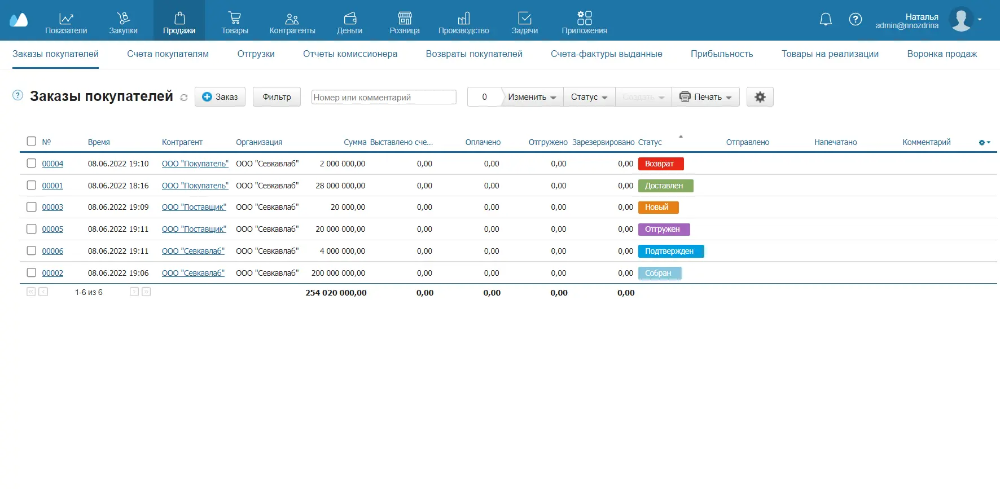
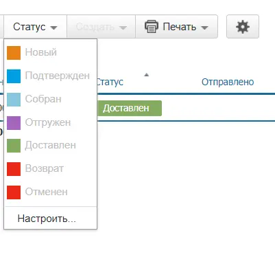
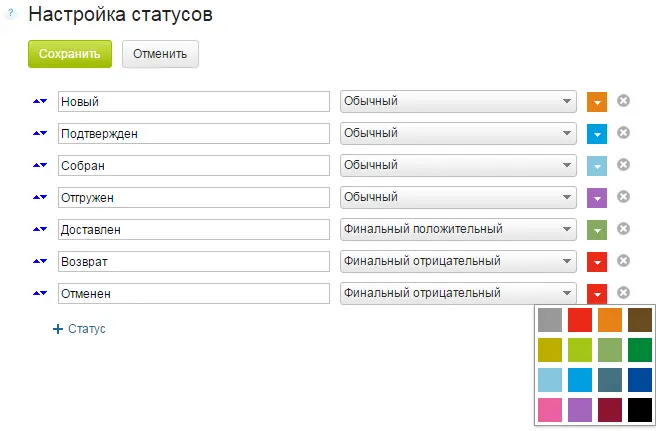
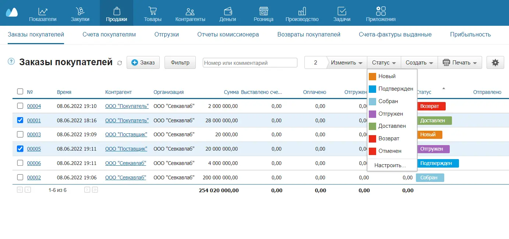
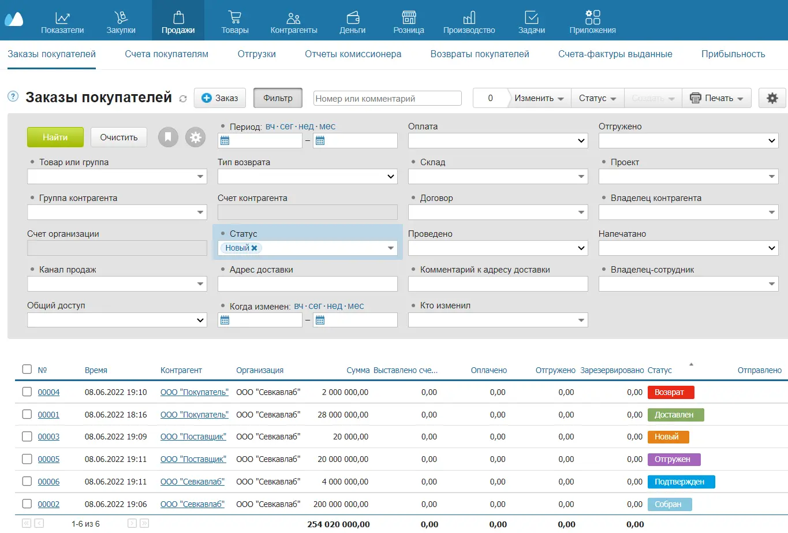

Статусы помогают отслеживать жизненный цикл документа, приоритизировать документы по тематике или значимости, упрощают поиск и совместную работу, помогают настроить бизнес-процессы в компании.
Так, например, Заказы покупателей можно отслеживать с помощью статусов: Новый, Подтвержден, Собран, Отгружен, Доставлен, Возврат, Отменен.
Для документов всех типов и контрагентов можно задать любое количество статусов.
Создание и настройка статусов
Чтобы добавить или настроить статус:
- Перейдите в список документов, статусы которых хотите изменить. Например, Продажи → Заказы покупателей.

- Нажмите на кнопку Статус вверху и выберите в выпадающем списке пункт Настроить. Откроется Окно настройки статусов.

- Отредактируйте статусы по своему усмотрению:
- Чтобы создать статус, нажмите на кнопку +Статус. Введите наименование статуса и выберите его цвет.
- Чтобы изменить порядок статусов, используйте стрелки слева от наименований. При изменении порядка статусов меняются данные в отчете Воронка продаж.
- Чтобы удалить статус, нажмите крестик.
- Чтобы изменить тип и цвет статуса, нажмите на характеристику, которую хотите изменить, и в выпадающем списке выберите новую.
Существует три типа статусов:
- Обычный — статус, через который проходит документ или контрагент при обработке. Может быть один или несколько статусов такого типа. Если нет ни одного такого статуса, отчет Воронка продаж не будет построен.
- Финальный положительный — статус, который получает документ или контрагент, если сделка завершилась успешно. Может быть только один статус такого типа. Если нет ни одного такого статуса, отчет Воронка продаж не будет построен.
- Финальный отрицательный — статус, который получает документ или контрагент, если сделка не завершилась успешно. Может быть один или несколько статусов такого типа. Если нет ни одного такого статуса, отчет Воронка продаж не будет построен.
- Нажмите на кнопку Сохранить вверху.

Присвоение статуса документу
Когда статусы настроены, можно выставить текущий статус каждого документа или контрагента. Например, чтобы присвоить статус заказу, перейдите в раздел Продажи → Заказы покупателей, отметьте необходимые документы флажками и выберите нужный статус.

Используйте статусы в фильтрах, чтобы отслеживать документы и совершать операции над документами с определенным статусом.
